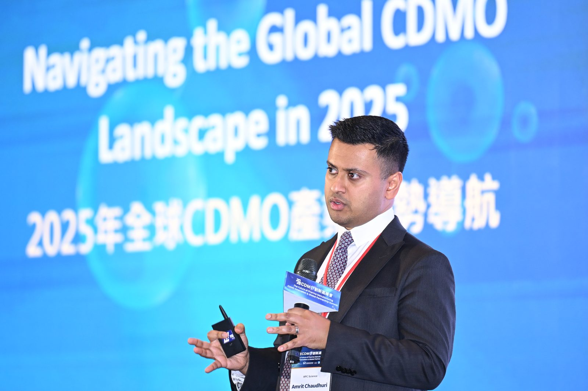

Speaking
Talks and interviews
This page lists 16 talks and 8 interviews on laboratory infrastructure, Lab-as-a-Service, the CDMO landscape and biomedical R&D. Each links to its original source.

Talks16
Apr 17, 2025
Keynote, Global CDMO Industry Outlook (Taiwan 2025)
2023
Clustering Insights: exploring life sciences
2023
Case 3: SmartLabs, “The Lab”
2023
Case 3: SmartLabs, “The Lab”
Sep 2023
Elevating pharma research: the innovative path forward
Sep 2023
Elevating pharma research: the innovative path forward
2023
Innovating lab space: ARM Studios interview
2023
Innovating lab space: ARM Studios interview
Jun 2023
Facilities of the future: Bisnow Bay Area Life Sciences Conference
2020
IDEA Collider: in conversation with Amrit Chaudhuri
Feb 2020
A conversation with Amrit Chaudhuri, SmartLabs
Jan 8, 2018
Major Expansion Announced at J.P. Morgan Healthcare Conference
2017
Eastern Bank Asian American Small Business Expo: featured speaker
Nov 2, 2016
Here's How We Can Speed Up Drug Innovation
May 2016
This week at MIT: featured speaker
2015
How curiosity drives innovation
Interviews8
Nov 13, 2023
Talking drug development trends with SmartLabs
Sep 13, 2023
Elevating Pharma Research, Podcast & Video
Apr 28, 2023
Case 3: SmartLabs, "The Lab" Podcast with Ben Kaplan
Feb 2023
More modalities, more problems? Not necessarily, says SmartLabs
Jan 31, 2023
The Future of Medicine Will Cost Less and Move Faster Than We Ever Imagined
Feb 19, 2020
IDEA Collider, Interview with Amrit Chaudhuri
May 31, 2018
Maximizing Discovery & Innovation While Minimizing Cost
May 1, 2018
Biotech Industry Trends and Shared Lab Models
For speaking invitations, please contact me on LinkedIn →